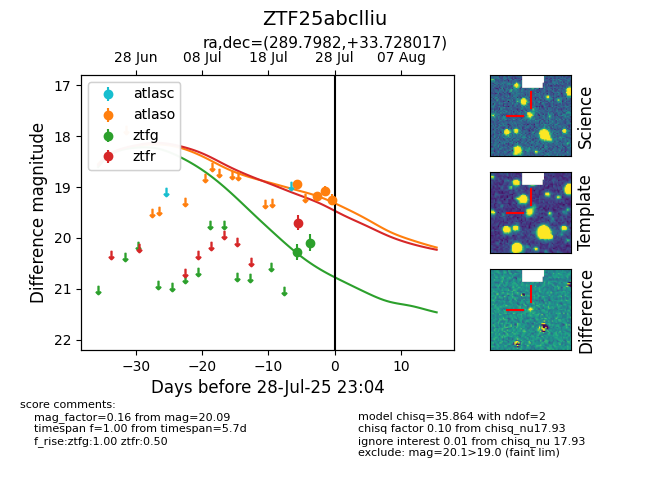

Target ZTF25abclliu at 2025-07-28 23:04, see:
FINK: fink-portal.org/ZTF25abclliu
Lasair: lasair-ztf.lsst.ac.uk/objects/ZTF25abclliu
ALeRCE: alerce.online/object/ZTF25abclliu
alt names
ZTF25abclliu (ztf,fink)
coordinates:
equatorial (ra, dec) = (289.7982,+33.72802)
galactic (l, b) = (66.1188,+9.42548)
photometry
last atlaso=19.25, ztfg=20.09, ztfr=19.70
4 atlaso, 2 ztfg, 1 ztfr detections
